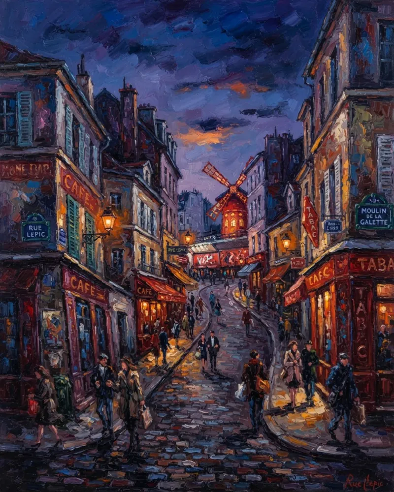
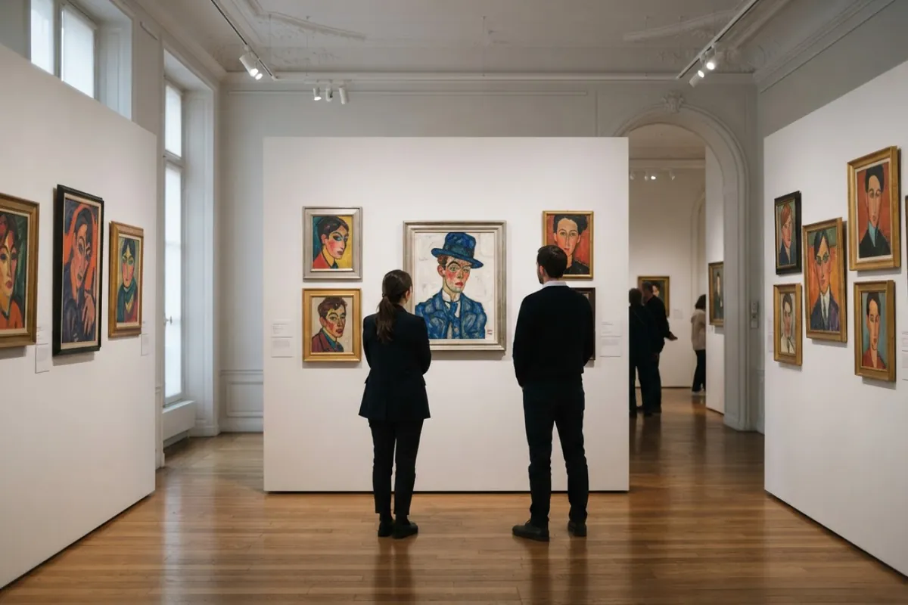
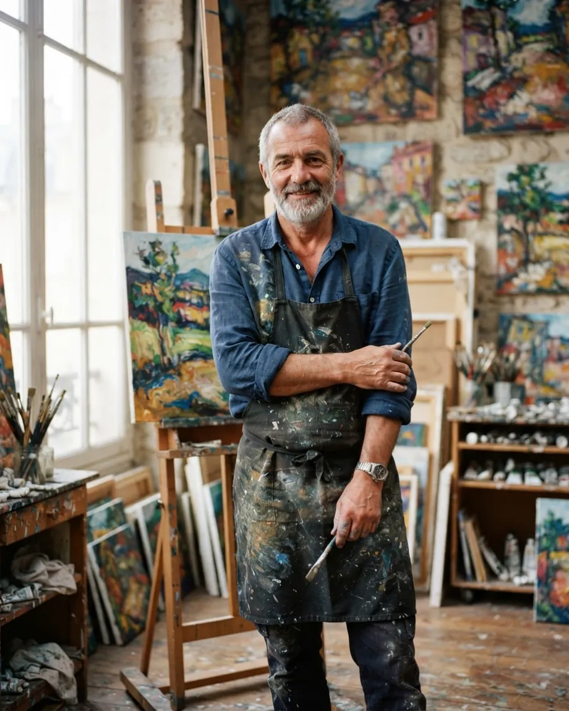

Galerie d'art · Nice · Peinture expressionniste & méditerranéenne
Là où la couleur prend la parole.
Lucien Ferrand, Inès Delmas, Théo Marchand et des artistes invités : une peinture vive, nourrie de la lumière méditerranéenne. À regarder de près, à vivre sur place, et à acquérir.
01 — Sélection
Des œuvres qui se regardent de près.


02 — Exposition en cours
Lumières de la Baie
Ports, visages et couleurs franches : l'exposition réunit six peintres de la Côte d'Azur autour de la lumière méditerranéenne, en dialogue avec les toiles récentes de Lucien Ferrand.
- Dates
- Du 15 octobre au 20 décembre 2026
- Vernissage
- Jeudi 15 octobre, 18h30
- Entrée
- Libre
03 — La galerie
Lucien Ferrand, peintre et galeriste.
Depuis plus de trente ans, Lucien Ferrand peint la lumière de la Côte d'Azur. Peintre lui-même, il a réuni autour de ses toiles des artistes qui partagent son goût pour la couleur franche : Inès Delmas, Théo Marchand et de nombreux invités.
La Galerie Azurine est née de cette envie : ouvrir sa collection au public, partager l'histoire de chaque œuvre et accompagner ceux qui souhaitent en acquérir une.
— Lucien Ferrand

04 — Visite
Venez voir les œuvres en vrai.
Mardi – samedi 10h – 19h · Dimanche 14h – 18h · 14 rue Bonaparte, 06300 Nice